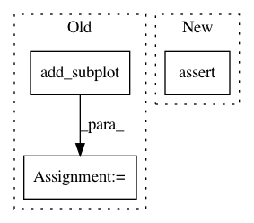

848ed7a2c171dad0e6a5fff69fb60cc41d0d0714,lib/matplotlib/tests/test_table.py,,test_table_cells,#,186
Before Change
def test_table_cells():
fig = plt.figure()
ax = fig.add_subplot(1, 1, 1)
table = Table(ax)
cell = table.add_cell(1, 2, 1, 1)
assert isinstance(cell, CustomCell)
After Change
cell = table.add_cell(1, 2, 1, 1)
assert isinstance(cell, CustomCell)
assert cell is table[1, 2]
cell2 = CustomCell((0, 0), 1, 2, visible_edges=None)
table[2, 1] = cell2
assert table[2, 1] is cell2
In pattern: SUPERPATTERN
Frequency: 3
Non-data size: 3
Instances
Project Name: matplotlib/matplotlib
Commit Name: 848ed7a2c171dad0e6a5fff69fb60cc41d0d0714
Time: 2018-02-07
Author: ariza.federico@gmail.com
File Name: lib/matplotlib/tests/test_table.py
Class Name:
Method Name: test_table_cells
Project Name: DistrictDataLabs/yellowbrick
Commit Name: 8a864b39174306793825cc87cc14f6255a6a5c27
Time: 2018-03-18
Author: benjamin@bengfort.com
File Name: tests/test_classifier/test_confusion_matrix.py
Class Name: ConfusionMatrixTests
Method Name: test_inverse_mapping
Project Name: DistrictDataLabs/yellowbrick
Commit Name: 8a864b39174306793825cc87cc14f6255a6a5c27
Time: 2018-03-18
Author: benjamin@bengfort.com
File Name: tests/test_classifier/test_confusion_matrix.py
Class Name: ConfusionMatrixTests
Method Name: test_confusion_matrix